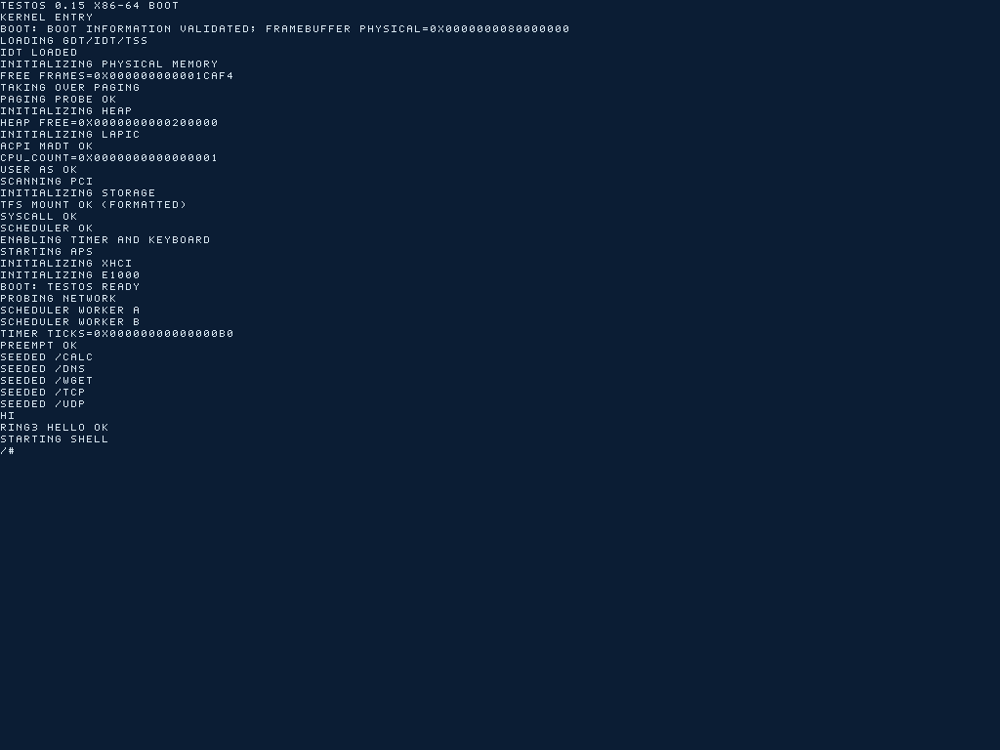
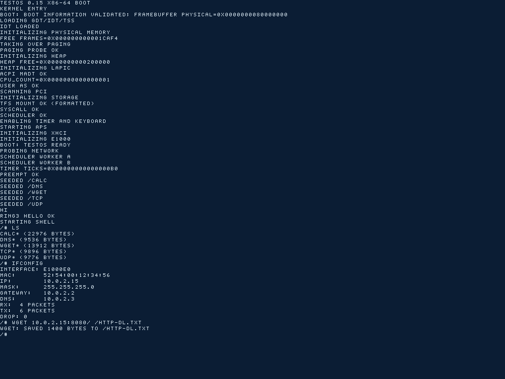
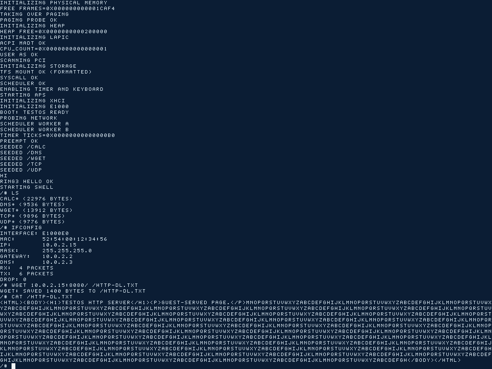
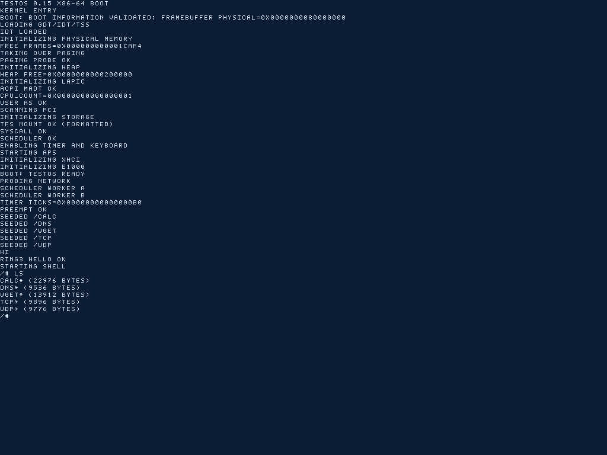
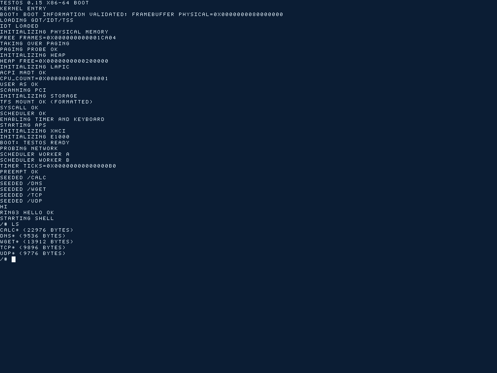

Independent systems project
TestOS: x86-64 operating system
A UEFI-booted operating system with persistent storage, a network stack, and user-space utilities. QEMU tests cover ATA, AHCI, and NVMe data disks, DHCP, file downloads, TCP echo, and HTTP.
Running in QEMU
Booting to the shell, listing disks, and downloading a file.
Captured in QEMU 11.1.1 using the boot image from the CI run below. Capture details and checksums.
{kind=link}

{kind=link}

{kind=link}

PASS: 25 TCP echo connections, 1021 bytes each
PASS: PCAP handshake, exact data ACK, echoed payload, and FIN close
{kind=link}

{kind=link}

{kind=link}
From boot to applications
Four layers, from firmware handoff to user space.
- UEFI bootLoad the kernel and initialize the display
- Kernel and device interfacesMemory, storage drivers, and network stack
- Persistent storage and socketsFilesystem operations and network communication
- Shell and user-space utilitiesDisk operations, downloads, TCP echo, and HTTP
QEMU tests
CI runs build, data-disk shell, networking, and HTTP jobs. All pass.
| Build and boot image | Pass |
|---|---|
| ATA, AHCI, and NVMe data disks | Shell checks pass on all three interfaces |
| Network configuration | DHCP and interface output checks |
| Downloads | File size checks on downloaded files |
| TCP | Echo interoperability and packet capture inspection |
| HTTP | HTTP interoperability checks |
Source ef72e55 · Run 34529923221 · Exact workflow.